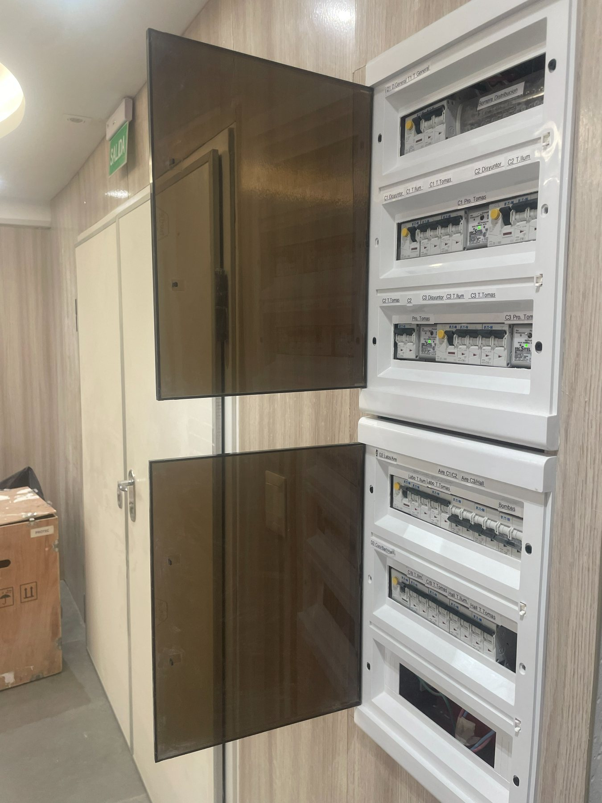

Instalación eléctrica integral
Canalizaciones, cableado, iluminación, tomacorrientes, comandos y distribución.
Proyectamos y ejecutamos instalaciones eléctricas residenciales y comerciales con planificación técnica, orden y atención al detalle.


CABA y GBAÁrea de cobertura
Equipo técnicoTécnico electromecánico y electricistas
Alcance claroPlanificación, ejecución y verificación
Planificación y ejecución eléctrica para viviendas, locales y espacios de trabajo.
Canalizaciones, cableado, iluminación, tomacorrientes, comandos y distribución.
Armado, conexión, organización y verificación de tableros y protecciones.
Infraestructura para cámaras, datos, televisión y alimentación de equipos.
Colocación de extractores, luminarias y ventiladores; cambios de tomas, revisión de fallas y pequeñas mejoras en el hogar.
Elegí una carpeta para ver fotos y videos del trabajo, desde el proceso hasta el resultado.
Del plano a la puesta en servicio, cada etapa se conversa y se define con claridad.
Revisamos planos, necesidades y prioridades para preparar una propuesta técnica y económica clara.
Organizamos tareas, materiales y tiempos junto con los demás trabajos del espacio.
Controlamos conexiones, circuitos y protecciones antes de dar por terminada la instalación.
Seguridad, calidad y confianza en cada proyecto.
Conversar sobre mi proyecto ↗Respondé unas preguntas rápidas y te acercamos al canal indicado. Atención en CABA y GBA. Si preferís, escribinos directamente.